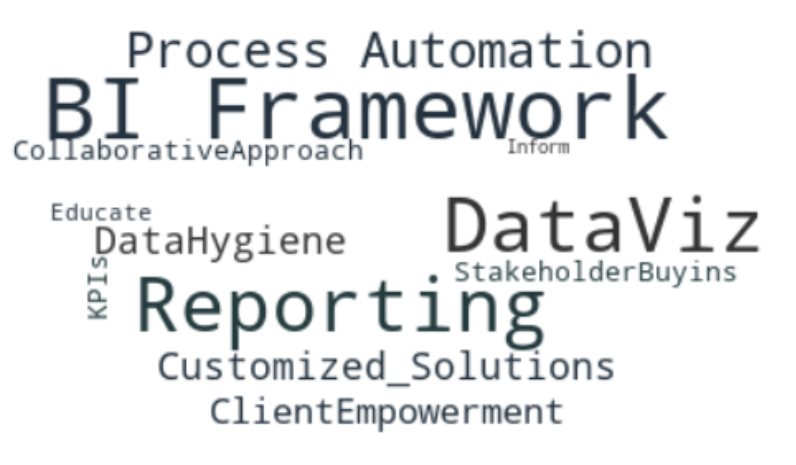
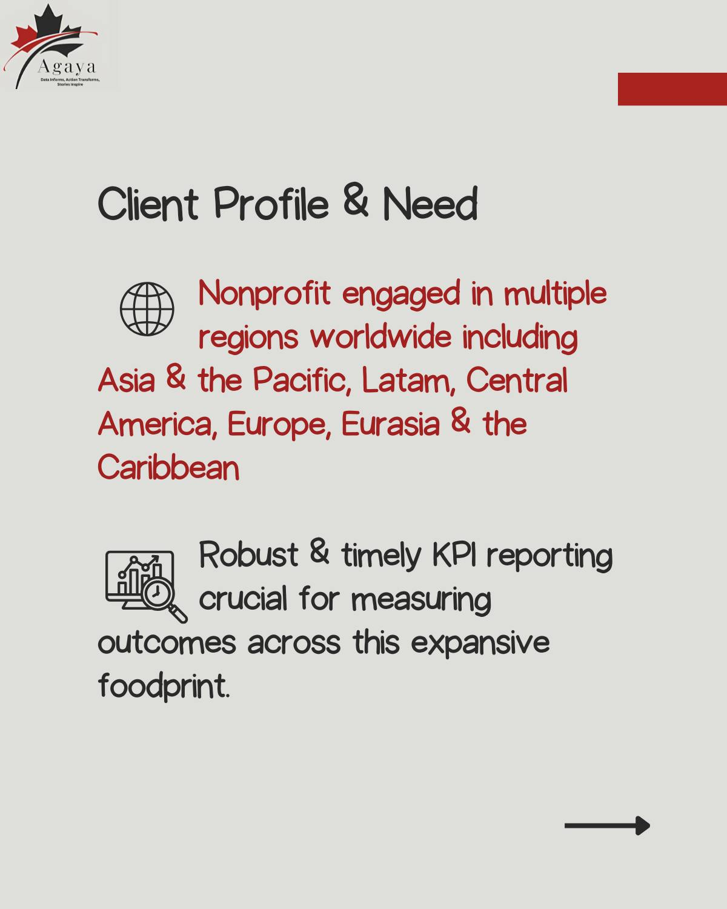
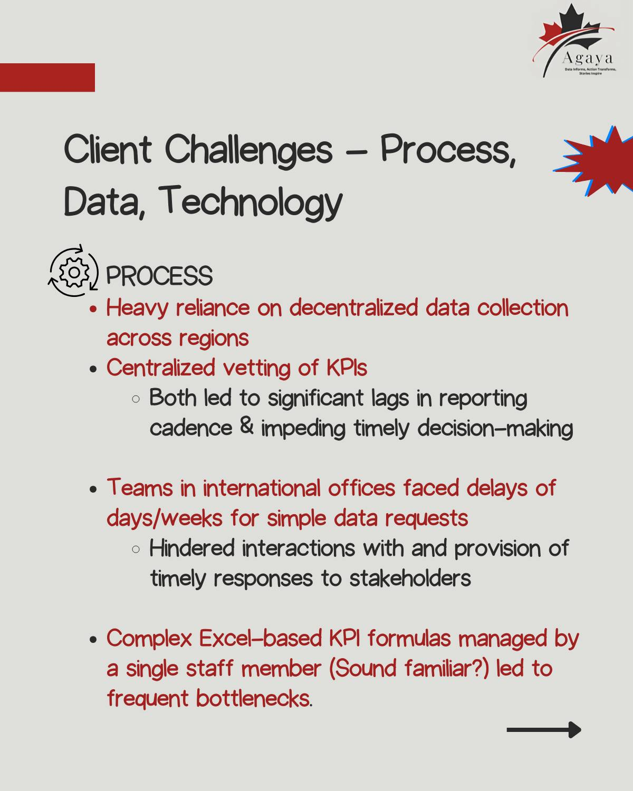
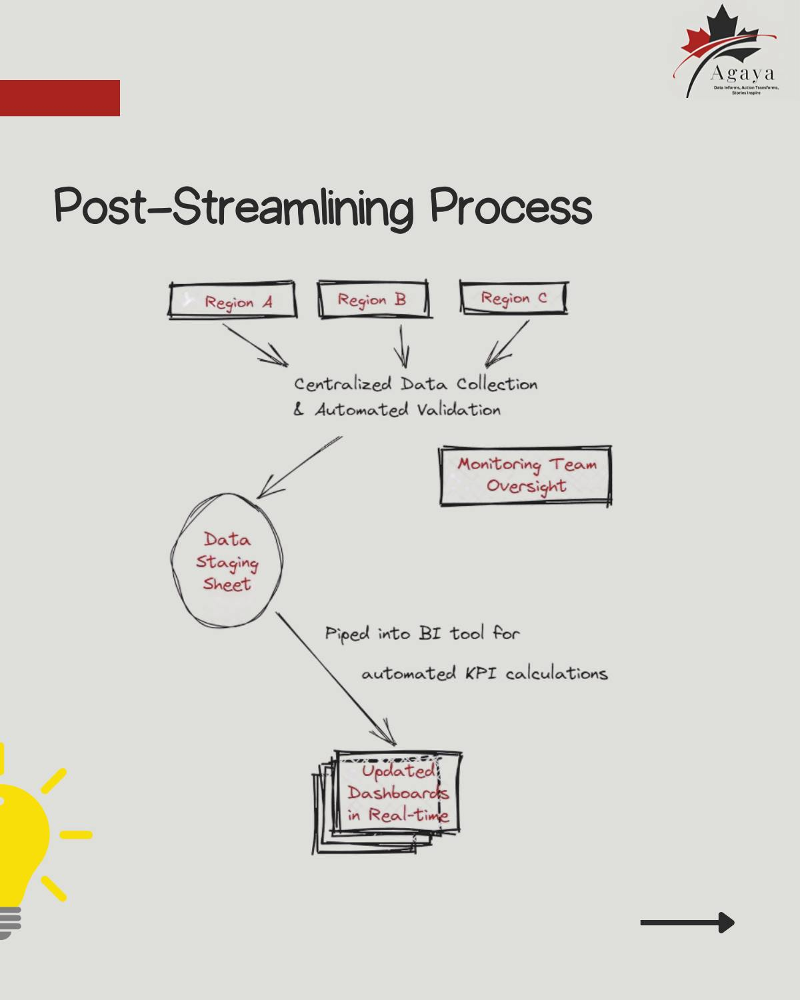

Your data knows what's working. We help you see it.
Do more of what matters. Change more lives.
Indu Sambandam
About
Hi, I'm Indu.
You're driving change but decisions are harder when data is scattered, unclear, or outdated. Nonprofit teams are stretched thin. We get it. We've worked with incredible organizations that change lives, but too often, they're stuck guessing what's working. That's where we come in.
Agaya helps nonprofits and mission-driven teams build dashboards, reports, AI-enhanced analytics and systems that make extracting insights easier and action faster. Whether you're just getting started or scaling your analytics, we'll meet you where you are, and build what you need to go further.
How We Help You
We build data solutions with you, not just for you ('The Ikea Effect'). Every tool, dashboard, or system we design is shaped in partnership with your team, using plain language and built-in guardrails so you can run with it confidently.
Your independence is our definition of success.
Because the best solutions are not the most complex ones. They are the ones that get used.
Smarter Dashboards & Business Intelligence: visual tools that show what's working, what's not, and where to go next with recommendations informed by AI analysis.
Fundraising Insights & Donor Analytics: Spot trends early. Understand AI-driven donor pattern identification. Retain supporters. Run campaigns that perform.
Streamlined Reporting Frameworks: Custom reports that save hours and reduce staff stress. Built to answer real questions quickly.
Team Training & Self-Service Analytics: Build in-house capacity so your insights don't depend on one person.
Impact Measurement & Storytelling: Clear, visual reporting—supplemented with AI-based sentiment and impact analysis—that funders and leadership can actually understand and use.
The real value of data isn't in collecting it, it's in using it.
It's in the moment someone on your team says "Now I see what's happening"

Client Testimonials
"Indumeena is a positive, motivated team player whose quarterly reporting framework helped us clearly communicate impact to internal and external audiences.
Reliable, collaborative, and strategic – Indumeena added real value to our team's data storytelling and reporting."
"Indu came to our call prepared, made the material approachable, and helped me feel more confident with data. The follow-up video was a fantastic bonus!
Insightful, kind, and incredibly helpful - I'd gladly work with Indu again on any project."
"It was really great working with Indu. She was very fast, thorough, and responsive. We were able to determine process and project outcomes in two short meetings,
and she delivered an excellent product - survey analysis and visualization very soon after. It was a very positive experience and I am grateful to have had her support with this work."
"Indu was incredibly helpful and efficient in completing this project. She gave us the tools to continue collecting the data we need, and made it visual and easy to understand."
"Indu was amazing and helpful! She gave wonderful insight and was a pleasure to work with!"
Case Studies
How one nonprofit reclaimed 40+ hours a quarter with smarter reports:



How a food bank moved beyond pounds and people to measure trust and dignity:
📧 Ready for a similar, tailored solution?indu@agayaconsulting.com
Sample Dashboards
Here's a sample of the work we do to turn data into actionable insights.
Is your staff spending hours in repetitive processes manually categorizing qualitative survey results into Positive, Negative or Neutral piles? Free up staff time by automating this process so that more time can be invested in analyzing & crafting compelling impact stories for stakeholder buy-in. Data Source - AI.